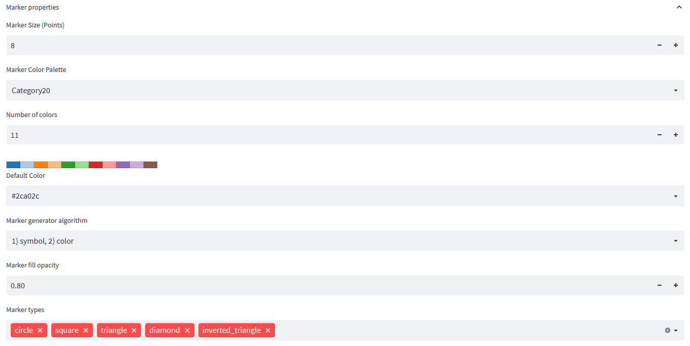
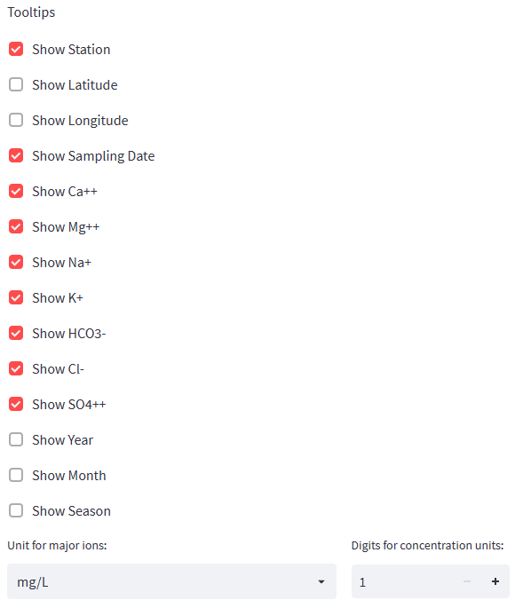

Plot Settings
This tab allows overwriting the automatically generated plot settings for the Piper diagram. The form is divided into two major sections: the more general plot settings and the marker settings.

Plot Properties
In the plot properties sections, you may define the following parameters:
Plot Title: Allows setting a title for the plot. If no title is required, the fields can be left empty. For grouped plots, the user may include the group-legend-by-parameter-name in curly braces. For each plot, this expression will be replaced by the code for which the plot uses the data. |
Plot Title Font Size: Size of title font in em.
Plot Title Alignment: Define whether the title should be left-, center- or right-aligned.
Group plots by: If your data contains strings or integer values with a limited number of distinct values, you may group the plots by such a field (e.g., station, geology, year, etc.). One plot will be created for each distinct value in the selected data column.
Group Legend by: Define the field that would be used to appear in the legend with distinct markers. For example, if you select the station column in the demo dataset, each station will be represented with a distinct marker.
Plot Width: Width of plot in points.
Show Grid: Show or hide the grid lines. Grid lines can be hidden if the target diagram is small. | Show Tick Labels: Show or hide the tick labels. Tick labels may be hidden if the target diagram is small.
Tick Label Font Size: Select a larger font in points if the diagram needs to be scaled down.
Axis Label Font Size: Select a larger font in points if the diagram needs to be scaled down.
Image Output Format Select png for a bitmap format and SVG for a vectorized output. The SVG format is scaleable but is not as widely supported as the png format.
Note that plot by and legend by grouping can be used in combination, but different fields should be applied to each grouping. When using the same group field, each plot will contain only one marker.
Marker Properties
Markers are defined by the basic properties of type (circle, square, triangle, etc.), color, and size.
Marker Size: size of the marker in points. All markers have the same size.
Marker Color Palette:: Colors are assigned to markers through color palettes containing a list of colors. Fontus uses the palettes of the Bokeh graphic library, used to render the Piper diagram. After selecting a palette, the selected palette is previewed below the selectbox.
Number of Colors:: Most palettes include 11 or more colors. If marker colors are generated by cycling through the palette, fewer colors may be more convenient. The field Number of Colors can be used to limit the number of colors used from the defined palette.
Default Color: If the user does not select a Group Legend By option, all data points are rendered using the same marker. Fontus uses the first marker type for the used symbol and the Default Color for the color of the default marker.
Marker Generator Algorithm:: When selecting the Group Legend By option, markers are generated automatically by alternating the symbol and/or colors of each marker. The user may choose between three generators:
- Cycle through marker types (circle, square, etc.) first using the first color of the palette. When the last symbol type is reached, use the next color and restart from the first marker type.
- Cycle through color type first using the first marker type of the marker-type list. When the last color is reached, use the next marker type and restart from the first color.
- Cycle through color and marker types simultaneously. The number of marker types and colors should be equal. Make sure, for this mode, that there are no more codes to be represented than color/marker types available, as otherwise, there will be identical markers for different codes.

Tooltips
When hovering over points on the plot, a tooltip will show information about the selected point. In this section, the user can define which fields to display in the tooltip box. For major ions, the user can specify whether values should be listed as mg/L (original concentration from the data file), meq/L, or meq%. Values expressed in meq% are smaller than mg/L-concentrations. Therefore the user may also specify the number of digits used for major ions concentrations.
